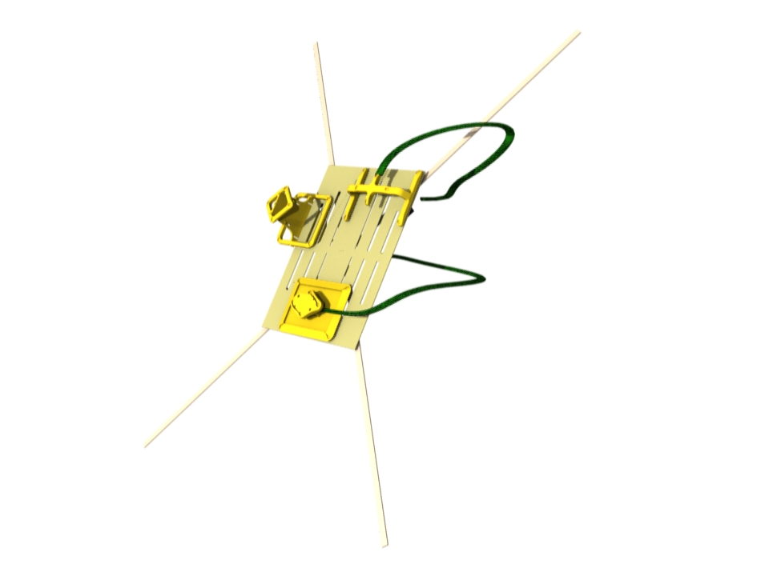

Tracker Alignment
Prepare to perform the alignment procedure for the 3D tracker:

Note: Alignment of the Chest Marker Support on the restraint plate is critical. Check that the top edge of the Chest Marker Support is aligned with the edge of the plate nearest the deck of the ISS module and that the cable exits the support to your right when facing the plate.
Press 'Start' to perform alignment.